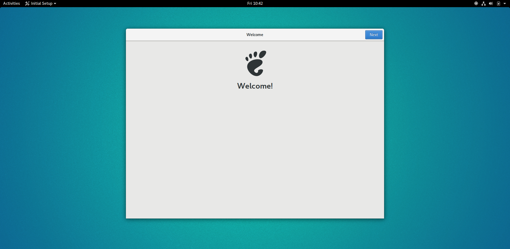

Einführung
Dieser Leitfaden erläutert die Installation der Entwicklungsumgebung, um Anwendungen mit der IsyFact zu entwickeln. Er richtet sich an Entwickler, die zum ersten Mal mit der IsyFact in Berührung kommen und möglichst schnell mit der Entwicklung einer Anwendung auf Basis der IsyFact beginnen möchten.
Ziel
Mit diesem Leitfaden bauen Sie eine funktionierende Entwicklungsumgebung auf und generieren mit dem Projektgenerator der IsyFact eine Hello-World-Anwendung.
Voraussetzungen
Zum Abschluss des Leitfadens (ohne Vorbereitung einer virtuellen Maschine) benötigen Sie:
-
Git 2.x
-
JDK 1.8
-
Maven 3.1.1+
-
Apache Tomcat 8.5.x
-
Spring Tool Suite
Wenn Sie sich eine virtuelle Maschine vorbereiten möchten, benötigen Sie zusätzlich:
-
Oracle VirtualBox
Wenn Sie sich bereits eine geeignete Umgebung geschaffen haben, um die Werkzeuge sowie die IsyFact-Bibliotheken zu installieren, können Sie die Vorbereitung einer virtuellen Maschine überspringen und direkt mit der Installation der Werkzeuge beginnen.
Virtuelle Maschine vorbereiten
In diesem Kapitel bereiten Sie eine virtuelle Maschine (VM) vor, auf der Sie später die IsyFact-Entwicklungsumgebung installieren werden.
| Wenn Sie keine virtuelle Maschine für Ihre IsyFact-Entwicklungsumgebung einsetzen oder bereits eine virtuelle Maschine als Grundlage für Ihre IsyFact-Entwicklungsumgebung vorbereitet haben, können Sie dieses Kapitel überspringen und mit dem Kapitel Werkzeuge fortfahren. |
VirtualBox installieren und konfigurieren
Für die Erstellung der virtuellen Maschine benötigen Sie ein Host-System, das die virtuelle Maschine als Gastsystem verwaltet. Das gängigste Produkt hierfür ist Oracle VirtualBox. VirtualBox lässt sich unter https://www.virtualbox.org herunterladen.
VirtualBox kann mehrere virtuelle Maschinen verwalten. Jede virtuelle Maschine wird auf Ihrer Festplatte unterhalb des Home-Verzeichnisses im Ordner "VirtualBox VMs" verwaltet. Jedes dieser Verzeichnisse enthält Konfigurationsdateien für die virtuelle Maschine. Im folgenden sprechen wir hierbei vom VM-Verzeichnis.
Um die virtuelle Maschine zu erzeugen, klicken Sie innerhalb von Oracle VirtualBox im Hauptmenü auf "Neu". Es erscheint ein neues Fenster, bei dem Sie im ersten Eingabefeld „Ubuntu Gnome 17.04 (64bit)“ eingeben. Setzen Sie die Version auf Ubuntu (64-bit).
Klicken Sie auf Weiter. Hierdurch wird VirtualBox das VM-Verzeichnis zur virtuellen Maschine erstellen. Das Verzeichnis trägt den gleichen Namen wie die virtuelle Maschine, nämlich "Ubuntu Gnome 17.04 (64bit)“.
Im nächsten Fenster wird der Hauptspeicher (RAM) der virtuellen Maschine konfiguriert. Die Größe des Hauptspeichers sollte mindestens 4096 Megabyte betragen.
Klicken Sie auf Weiter. Danach können Sie eine Festplatte zu der virtuellen Maschine erstellen. Hierbei handelt es sich um eine Datei mit der Endung .vdi, die VirtualBox in das Verzeichnis der virtuellen Maschine speichert. Über die Option "Festplatte erzeugen" würden Sie diese Datei normalerweise ganz neu anlegen, um dort später das Ubuntu Betriebssystem zu installieren. Statt die Festplatte und das darin zu installierende Betriebssystem von Hand zu installieren, beschreibt diese Anleitung eine Abkürzung. Die Webseite http://www.osboxes.org bietet virtuelle Festplatten mit vorinstallierten Betriebssystemen an. Unter http://www.osboxes.org/ubuntu-gnome wird beispielsweise eine Festplatte angeboten, auf der Ubuntu mit der Gnome-Oberfläche vorinstalliert ist. Diese Datei können Sie in komprimierter Form auch direkt über folgende URL herunterladen:
https://drive.google.com/uc?export=download&confirm=ZacZ&id=0B_HAFnYs6Ur-VWZ5TTVSd1dScEE
Nach dem Herunterladen befindet sich eine Datei mit dem Namen Ubuntu_Gnome_17.04-VB-64bit.7z in Ihrem Download-Verzeichnis. Entpacken Sie diese Datei in das VM-Verzeichnis „Ubuntu Gnome 17.04 (64bit)". Danach wechseln Sie wieder in das VirtualBox Programm, um die Festplatte einzubinden.
Anschließend sollte die virtuelle Maschine samt virtueller Festplatte fertiggestellt sein.
Die Konfiguration der VM ist noch nicht ganz fertig, denn Sie müssen auch noch einiges bezüglich Boot-Reihenfolge, Prozessor-Anzahl, Grafikspeicher und Austauschlaufwerk einstellen.
Hierfür selektieren Sie die neu erschaffene VM und wählen im Menü "Ändern". Im erscheinenden Einstellungsfenster wechseln Sie auf der linken Seite auf "Allgemein" und dann rechts in den Reiter "Erweitert". Öffnen Sie die beiden Komboboxen "Gemeinsame Zwischenablage" und "Drag’n Drop" und selektieren Sie dort jeweils den Eintrag "bidirektional", um eine gemeinsame Zwischenablage des Host-Betriebssystems und der virtuellen Maschine zu erlangen.
Dann wechseln Sie auf der linken Seite in den Eintrag "System". Auf der rechten Seite wählen Sie den Reiter "Hauptplatine" und verschieben die Einträge so, dass in der Boot-Reihenfolge zunächst die Platte und dann die DVD erscheint. Das Häkchen bei "Diskette" können Sie entfernen.
Den Chipsatz belassen Sie bei PIIX3.
Je nach Zeigergerät selektieren Sie eine für Sie passende Option aus. In dem Screenshot wird beispielsweise "USB-Tablet" vewendet. Wenn Sie jedoch eine Maus einsetzen, selektieren Sie "PS/2-Maus".
Bei dem IO-APIC, handelt es sich um den sogenannten Advanced Programmable Interrupt Controller. Weil Sie für die Entwicklungsumgbeung zwei Prozessorkerne im Gastsystem einsetzen werden, ist das Häkchen erforderlich.
Dann wechseln Sie in den Reiter "Prozessor". Hier stellen Sie ein, dass das Gastsystem über zwei Prozessoren verfügen soll.
Als Letztes klicken Sie auf der linken Seite auf „Gemeinsame Ordner“. Auf der rechten Seite können Sie über einen Ordner-Button einen gemeinsamen Ordner hinzufügen. Wählen Sie einen für Sie passenden Ordner und setzen Sie ein Häkchen bei "Automatisch einbinden".
Bestätigen Sie die Änderungen mit einem Klick auf OK.
Danach starten Sie die virtuelle Maschine mit einem Doppelklick auf die neu erstellte Instanz.
Ubuntu Gnome
Starten Sie Ihre virtuelle Maschine. Gleichen zu Beginn, müssen Sie Ihre Zugangsdaten eingeben.
Benutzername und Kennwort lauten osboxes.org. Danach erfolgt die Ersteinrichtung von Ubuntu Gnome.

Anschließend legen Sie die Spracheinstellungen fest.
Die restlichen Einstellungen können Sie überspringen. Nun ist die Konfiguration von Ubuntu beendet.
Klicken Sie links oben auf "Applications" und dann unten auf "Activities Overview", um eine Übersicht über die Applikationen zu bekommen.
Die Gasterweiterungen
Oracle VirtualBox bietet Gasterweiterungen an, welche die Performanz des Gastsystems verbessert. Ein weiteres Feature ist, dass sich der Bildschirm beliebig skalieren lässt. Ohne Gasterweiterungen sind lediglich die Auflösungen 640×480, 800×600, und 1024×768 möglich. Außerdem funktioniert Drag’n Drop nur mit installierten Gasterweiterungen. Darüber hinaus bieten die Gasterweiterungen den sogenannten Seamless Mode an. Der Seamless Mode ermöglicht, dass sich die Fenster der VirtualBox Instanz innerhalb des Host-Systems anzeigen lassen, und somit den Anschein erwecken, sie seien in dieses integriert.
| Um die Gasterweiterungen zu installieren, benötigen Sie ein optisches Laufwerk, das vor dem Start der Ubuntu Instanz noch leer ist. Wenn Sie die obigen Arbeitsschritte durchgeführt haben, sollte das optische Laufwerk aber bereits existieren. |
Starten Sie die Ubuntu Instanz und klicken Sie im VirtualBox Menü auf den Eintrag "Geräte" → "Gasterweiterungen einlegen..".
Hierdurch wird eine virtuelle CD automatisch in das optische Laufwerk eingelegt, worauf eine Startanwendung von selbst dafür sorgt, dass die Gasterweiterungen installiert werden. Im aufkommenden Fenster, klicken Sie auf "Run".
Bestätigen Sie mit einem Klick auf "Run". Anschließend sollte die Installation der Gasterweiterungen starten.
Ihre virtuelle Maschine ist nun einsatzbereit.
Werkzeuge installieren
Als Nächstes benötigt Ihre Entwicklungsumgebung ein JDK, Git, Maven und eine Entwicklungsumgebung (in diesem Fall das Eclipse Derivat Spring Source Tool Suite (STS)).
JDK
Auf der Kommandozeile installieren Sie mit folgender Anweisung das JDK:
sudo apt-get install openjdk-8-jdk
In der Datei .bashrc fügen Sie die Umgebungsvariable JAVA_HOME hinzu und erweitern die Umgebungsvariable PATH:
JAVA_HOME=/usr/lib/jvm/java-8-openjdk-amd64 export JAVA_HOME
PATH=$JAVA_HOME/bin:$PATH export PATH
Git
Danach installieren Sie Git mit folgender Anweisung:
sudo apt-get install git
Um auch alle Sub-Packages zu installieren, rufen Sie folgendes Kommando auf:
sudo apt-get install git-all
Git Konfiguration
Auf der Kommandozeile wird Git über den Aufruf des Kommandos git gesteuert.
Das git-Kommando kennt eine Reihe von Optionsparametern.
Die Konfiguration wird beispielsweise über den Optionsparameter config festgelegt.
Dabei kann sie in drei Granularitäten durchgeführt werden.
Über das Kommando
git config --system
nehmen Sie die Konfiguration für alle Benutzer des Betriebssystems vor.
Diese System-Konfiguration wird automatisch in die Datei /etc/gitconfig geschrieben.
Über
git config --global
führen Sie die Konfiguration für den aktuellen Benutzer durch. Diese Konfiguration wird automatisch in die Datei .gitconfig in Ihr Home-Verzeichnis geschrieben.
Darüber hinaus lässt sich in jedem einzelnen Verzeichnis eine eigene Konfiguration setzen, die in dem jeweiligen Unterverzeichnis .git/config geschrieben wird.
Dabei werden die grob- von den feingranularen Konfigurationen überschrieben.
Mit folgender Anweisung setzen Sie die Konfiguration für Ihren Git-Benutzer:
git config --global user.name "Michael Mustermann" git config --global user.email "MichaelMustermann@behoerde.de"
Jeder Konfigurationsstufe überschreibt die Werte der darüber liegenden Konfigurationsstufe.
Beispielsweise gelten die Systemeinstellungen (--system) für alle Benutzer des Rechners, werden aber von globalen Einstellungen (--global) überschrieben.
Um die Konfiguration einzusehen, geben Sie folgendes Kommando ein:
git config --global --list
Hilfe erhalten Sie über den Optionsparameter help. Beispielsweise beschaffen Sie sich die Hilfestellung zum Optionsparameter config mit folgendem Kommando:
git help config.
Maven
IsyFact besteht aus zahlreichen Maven-Projekten. Ubuntu bietet von Haus aus ein eigenes Maven Paket an, das über folgendes Kommando intalliert wird:
sudo apt-get install maven
Spring Tool Suite (STS)
Im nächsten Schritt installieren Sie die integrierte Entwicklungsumgebung Spring Tool Suite (STS). Auf der Webseite https://spring.io/tools/sts/all bietet der Hersteller diesbezüglich eine Reihe von Download-Links an. Laden Sie die Linux-Version in der 64-Bit Variante herunter. Danach wechseln Sie in das Verzeichnis /opt und installieren die STS-Installationsdatei über folgendes Kommando:
sudo tar -xzf <Pfad zur STS-Installationsdatei> -C /opt
Anschließend ist die Entwicklungsumgebung über das Kommando STS im Ordner /opt/sts-bundle/<STS-Release> einsatzfähig.
Um STS darüber hinaus über eine Desktop-Verknüpfung starten zu können, muss im Verzeichnis .local/share/applications Ihres Home-Verzeichnisses eine Datei des Typs .desktop abgelegt werden. Diese können Sie bequem mit dem Programm gnome-panel erzeugen. Installieren Sie gnome-panel mit folgender Anweisung:
sudo apt install gnome-panel
Das folgende Kommando startet anschließend das Gnome Panel.
sudo gnome-desktop-item-edit /usr/share/applications --create-new
Setzen Sie den Namen, den Pfad zum STS-Kommando und ein Kommentar. Das Bild ändern Sie durch einen Mausklick auf das Icon-Symbol.
Danach lässt sich STS über das Applikations-Menü von Ubuntu starten. Hierfür klicken Sie auf "Applications" → "Other" → "STS"
Außerdem wird STS nun auch in der "Activities Overview" angezeigt.
Apache Tomcat
Bei einer IsyFact-Anwendung handelt es sich um eine Webanwendung, die genauso wie andere JavaEE-basierte Webanwendungen in einem Servlet-Container betrieben wird. Der gängigste Web Container hierfür ist Catalina bzw. das Produkt Apache Tomcat, das den Catalina Web Container integriert. Obwohl STS ein eigenes Apache Tomcat Derivat bereithält, setzt man bei einer IsyFact-Anwendung typischerweise Apache Tomcat ein. Deshalb wird in diesem Leitfaden diese Variante gezeigt. Laden Sie Apache Tomcat von der Webseite http://www.apache.org herunter.
Nach dem Download extrahieren Sie den Apache Tomcat Server ins Verzeichnis /opt.
sudo tar -xzvf <Pfad zur Tomcat-Installationsdatei> -C /opt
Über folgendes Kommando sorgen Sie auch noch dafür, dass das Installationsverzeichnis dem Benutzer osboxes gehört.
sudo chown -R osboxes /opt/apache-tomcat-8.5.16
Innerhalb von STS müssen Sie dafür sorgen, dass der Apache Tomcat Server eingebunden wird. Hierfür öffnen Sie STS und klicken im Hauptmenü auf "Window" → "Preferences". Im Einstellungsfenster öffnen Sie "Server" → "Runtime Environment". Klicken Sie hier auf "Add".
Öffnen Sie den Reiter "Apache" und selektieren Sie darunter den Eintrag "Apache Tomcat v8.5". Setzen Sie auch ein Häkchen bei der Checkbox "Create a new local server".
Klicken Sie auf "Next". Setzen Sie im erscheinenden Fenster den Installationspfad Ihres Apache Tomcat. In diesem Leitfaden ist das /opt/<Tomcat-Release>.
Klicken Sie auf "Finish".
Klicken Sie auf "Apply and Close".
IsyFact-Bibliotheken installieren
In diesem Abschnitt wird gezeigt, wie Sie das IsyFact-Framework in der Spring Tool Suite (STS) installieren und Ihre Entwicklungsumgebung auf die Entwicklung einer neuen Anwendung vorbereiten.
| Das IsyFact-Framework besteht aus einer Reihe von GitHub-Repositories, die wiederum jeweils eines oder mehrere Maven-Projekte enthalten. Die URL zu den GitHub-Repositories lautet: https://github.com/isyfact. |
isyfact-masterpom
Mit diesem Abschnitt werden Sie die entfernten GitHub-Repositories in ein lokales Verzeichnis klonen. Sie beginnen mit dem GitHub-Repository isyfact-masterpom, denn dort befinden sich die Maven-Projekte isyfact-masterpom und isyfact-masterpom-lib, die die übergeordneten Maven-Projekte aller anderen Maven-Projekte des IsyFact-Frameworks darstellen. isyfact-masterpom ist der parent von isyfact-masterpom-lib.
| In den Diagrammen wurden die GitHub-Repositories mit braunem Rand und hellbrauner Füllfarbe und die darin enthalten Maven-Projekte mit hellblauem Rand und weisser Füllfarbe gekennzeichnet. Das parent-child-Verhältnis zwischen den Maven Projekten wird mit einem hellblauen Pfeil veranschaulicht. |
Um die GitHub-Repositories zu klonen, könnten Sie Git auf der Kommandozeile einsetzen. In dieser Anleitung wird jedoch das Arbeiten mit Git innerhalb der STS gezeigt. Starten Sie also die STS und öffnen Sie dort die Perspektive Git. Klicken Sie in der Perspektive Git entweder auf die Clone-Schaltfläche oder auf den Link „Clone a Git repository“.

Klicken Sie im erscheinenden Fenster auf GitHub.
Klicken Sie anschließend auf "Next". In dem aufkommenden Fenster können Sie online nach GitHub-Repositories suchen. Geben Sie im Suchfeld "IsyFact" ein und klicken Sie auf den Button "Search". Daraufhin sollten im Fenster alle GitHub-Repositories aufgelistet werden, bei denen im Namen der Bezeichner "IsyFact" vorkommt. Selektieren Sie dort das GitHub-Repository isyfact-masterpom.
Klicken Sie auf "Next". Im nächsten Fenster wird der Branch ausgewählt, der lokal heruntergeladen werden soll.
Klicken Sie erneut auf "Next".
Klicken Sie abschließend auf "Finish". Als Nächstes kann das Maven-Projekt aus dem Repository importiert werden. Hierfür klicken Sie mit der rechten Maustaste auf das Repository und wählen den Eintrag "Import Projects" aus. Daraufhin erscheint folgendes Fenster.
Bestätigen Sie den Import des Maven-Projekts isyfact-masterpom mit einem Klick auf Finish. Wechseln Sie anschließend in die Perspective "Spring". Hier sollte jetzt im Package-Explorer das Maven-Projekt isyfact-masterpom zu sehen sein. Dann klicken Sie mit der rechten Maustaste auf die Datei pom.xml und führen "Run As" → "Maven Install" aus.
Dann öffnen Sie im Maven-Projekt isyfact-masterpom den Unterordner isyfact-masterpom-lib und führen in der dortigen pom.xml erneut das Menü "Run As" → "Maven Install" aus.
isyfact-products-bom
Als Nächstes brauchen Sie das GitHub-Repository isyfact-products-bom. Das Maven-Projekt isyfact-products-bom hat eine parent-child-Abhängigkeit zum Maven-Projekt isyfact-masterpom-lib. Da das Maven-Projekt isyfact-masterpom-lib bereits installiert sind, können Sie nun das GitHub-Repository isyfact-products-bom klonen.
Um das GitHub Repository in ein lokales Verzeichnis zu klonen, gehen Sie genauso wie bereits weiter oben beschrieben vor, indem Sie in der Perspective Git auf den Button Clone klicken und in der GitHub-Repository-Auflistung hiernach suchen.
Klicken Sie auf "Next". Auch hier wählen Sie den master-Branch.
Klicken Sie erneut auf "Next".
Bestätigen Sie mit einem Klick auf "Finish". Importieren Sie anschließend auch bei diesem Repository wieder das Maven-Projekt, indem Sie mit der rechten Maustaste auf dem Repository den Eintrag "Import Projects" auswählen. Dann wechseln Sie in die Perspective "Spring" und führen auf dem Projekt isyfact-products-bom das Menü "Run As" → "Maven Install" aus.
| Führen Sie bei dem Projekt isyfact-products-bom das Menü "Maven" → "Update Project" aus, um eventuell unauffindbare Abhängigkeiten aufzulösen. |
isyfact-base
Ddas Repository isyfact-base ist von großer Bedeutung, da es einen großen Teil der Kernfunktionalität beinhaltet. Die Kernfunktionalität ist auf mehrere Unterprojekte aufgeteilt. Überspannt werden die Unterprojekte durch das Maven-Projekt isyfact-base.
Zum Klonen des Repositories gehen Sie wie bei den Repositories weiter oben vor.
Als Nächstes importieren Sie die Maven-Projekte.
Wechseln Sie in die View "Spring". Dort führen Sie bei jedem importierten Maven-Projekt "Run As" → "Maven Install" aus.
| Führen Sie auch bei diesen Projekten das Menü "Maven" → "Update Project" aus, um eventuell unauffindbare Abhängigkeiten aufzulösen. |
isyfact-bom
Als Nächstes beschaffen Sie sich das GitHub-Repository isyfact-bom.
Wechseln Sie zur Ansicht "git" und laden Sie das GitHub-Repository isyfact-bom herunter.
Klicken Sie auf "Next".
Klicken Sie erneut auf "Next".
Bestätigen Sie mit einem Mausklick auf "Finish".
Wenn das Repository heruntergeladen worden ist, importieren Sie das isyfact-bom Maven-Projekt. Danach wechseln Sie in die Perspective "Spring".
Zuletzt führen Sie im Projekt isyfact-bom "Run As" → "Maven Install" durch.
isyfact-persistence
In diesem Abschnitt importieren Sie das Repository isyfact-persistence.
Wechseln Sie in die View "Git" und klonen Sie das Projekt isyfact-persistence vom GitHub-Server.
Nachdem das Repository isyfact-persistence geklont worden ist, importieren Sie das enthaltene Maven-Projekt und wechseln in die Perspektive "Spring".
In der Perspektive "Spring" führen Sie das Menü "Run as" → "Maven Install" aus.
isyfact-projectgenerator
Zuletzt muss auch noch das GitHub-Repository des Projekt-Generators beschafft werden, mit Sie später die Hello-World-Anwendung erzeugen werden.
Wechseln Sie wieder in die View "Git" und klonen Sie das Projekt isyfact-projectgenerator.
Importieren Sie das im Repository enthaltene Maven-Projekt.
Nachdem das Projekt isyfact-projectgenerator importiert worden ist, wechseln Sie in die Perspective "Spring" und führen Sie abermals "Run as" → "Maven Install" aus.
Hello-World-Anwendung generieren
In diesem Abschnitt wird die Generierung der IsyFact-konformen Hello-World-Anwendung gezeigt.
| Bei der generierten Hello-World-Anwendung handelt es sich um ein Maven-Projekt, das für Ihre eigene Implementierung als Grundgerüst dient. |
Hierfür klicken Sie im Hauptmenü auf "File" → "New" → "Other". Im Wizard selektieren Sie "Maven" → "Maven Project".
Klicken Sie auf "Next". Im nächsten Fenster selektieren Sie die Checkbox "Use default workspace location".
Klicken Sie auf "Next". Selektieren Sie den Maven Archetype des IsyFact-Projektgenerators.
Danach wählen Sie die Group Id und Artifact Id Ihres Maven-Projekts.
Zuletzt bestätigen Sie die Erstellung des neuen Maven Projekts mit einem Klick auf "Finish". Die Hello-World-Anwendung wird nun erzeugt. Führen Sie ggf. "Update Maven Projekt" bei dem neu generierten Projekt durch.
Um die Hello-World-Anwendung zu starten, klicken Sie mit der rechten Maustaste auf das generierte Projekt und wählen Sie im Kontextmenü "Run as" → "Run on Server". Selektieren Sie den im Werkzeugkapitel eingerichteten Apache Tomcat und setzen Sie ein Häkchen bei der Checkbox "Always use this server when running this project".
Mit "Finish" wird der Application Server gestartet. Im Anschluss sollte der Webbrowser von STS mit der Startseite der Anwendung erscheinen. Zum Test geben Sie im ersten Eingabefeld einen Namen und im zweiten eine Nachricht ein. Über den Button "Abschicken" wird die Nachricht gespeichert und alle gespeicherten Nachrichten im unteren Bereich ausgegeben.